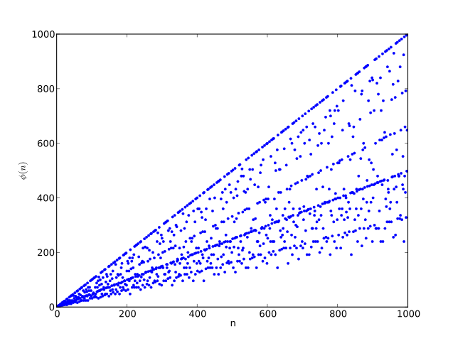
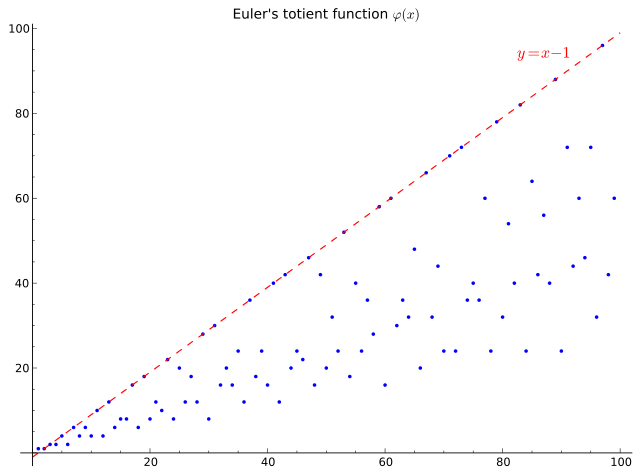

1 Fundamentals
For the authoring reference
1.1 Definitions
Definition 1.1 (Group) A set \(G\), one operators \(\cdot\) form \((G,\cdot)\) such that
Associativity: \(\forall a,b,c \in A\)
\[(a \cdot b) \cdot c = a \cdot (b \cdot c)\]
Identity element: \(\forall a \in A, \exists ! e \in A\)
\[e \cdot a = a \cdot e\]
Inverse element: \(\forall a \in A, \exists ! b \in A\)
\[a \cdot b = b \cdot a = e\]
\(\exists !\) is the uniqueness existential quantification.
Definition 1.2 (Group order) The orderof a finite group is the number of its elements.
The order of group G is denoted by \(ord(G)\) or \(|G|\).
Definition 1.3 (Element order (Period, or Period length)) The order (or period length or period) of an element of a finite group \(G\) is the order of the subgroup generated by the element.
\(\forall a \in G\), the generated group (strictly speaking, subgroup) is denoted by \(\langle a \rangle\).
If \(a \in G\) and the generated group is \((\)a \(,\cdot)\),
\[\langle a \rangle = \{a^k:k \in \mathbb{Z}\}\]
The order of element \(a\) is denoted by \(ord(a)\) or \(|a|\) for symplicity. It is actually
\[ord(a) = ord(\langle a \rangle)\]
\(\forall n \in \mathbb{Z}, a \in G\) and the identity \(e\),
\[a^n = e \iff ord(a) \mid n\]
Theorem 1.1 For any finite group \(G\), the order (number of elements) of every subgroup of \(G\) divides the order of \(G\).
Formally, if \(H\) is a subgroup of \(G\),
\[ |G| = [G:H]\cdot|H|\]
where \([G:H]\) is the index.
Theorem 1.2 (Fermat’s Little Theorem) If \(p\) is a prime number, \(\forall x \in \mathbb{Z}\)
\[x^p \equiv x \pmod p\]
or equivalently
\[x^{p-1} \equiv 1 \pmod p\]
Proof. Assuming \(p\) is a prime number, the set \(G = \{1,2,\dots,p-1\}\) forms a finite group (Definition 1.1) w.r.t \(\cdot \pmod p\). And \(ord(G) = p - 1\).
Take \(a \in G\), and let \(k = ord(a)\), then \((G' = \{1,a,a^2,\dots,a^{k-1}\}, \cdot \pmod p)\) is a subgroup of G. And \(ord(G) = ord(a) = k\).
By Lagrange’s theorem (Theorem 1.1), \(k \mid ord(G)\) or \(k \mid (p - 1)\). So \(\exists m \in \mathbb{N}_\neq 0, p - 1 = km\)
\[ a^{p-1} = a^{km} \mathop{=}^{\text{Associativity}} (a^k)^m \mathop{=}^{G'} 1^m = 1 \]
Fore more details, such as to prove that every element of \(G\) is invertible, see proofs using group theory
Definition 1.4 (Euler’s totient function) Euler’s totient function counts the positive integers up to a given integer \(n\) that are relatively prime to \(n\). It is written as as \(\varphi(n)\).
- The number of integers k in the range \(1 ≤ k ≤ n\) for which the greatest common divisor \(\text{gcd}(n,k)\) is equal to 1.


Definition 1.5 (Abelian group (Commutative group)) A set \(A\), one operators \(\cdot\) form \((A,\cdot)\) such that
Associativity: \(\forall a,b,c \in A\)
\[(a \cdot b) \cdot c = a \cdot (b \cdot c)\]
Identity element: \(\forall a \in A, \exists e \in A\)
\[e \cdot a = a \cdot e\]
Inverse element: \(\forall a \in A, \exists b \in A\)
\[a \cdot b = b \cdot a = e\]
Commutativity: \(\forall a,b \in A\)
\[a \cdot b = b \cdot a\]
Definition 1.6 (Ring) Rings are algebraic structures that generalize fields such that
- Multiplication needs not to be commutative
- Multiplicative inverses need not exist.
Formally, a set \(R\), two operators addtion \(+\) and multiplication \(\cdot\) forms \((R,+,\cdot)\) such that
R is an Abelian group (Definition 1.5) w.r.t \(+\).
Associativity: \(\forall a,b,c \in R\)
\[(a \cdot b) \cdot c = a \cdot (b \cdot c)\]
Distributivity: $\(a,b,c \in R\)
\[a \cdot (b + c) = (a \cdot b) + (a \cdot c), and (a + b) \cdot c = (a \cdot c) + (b \cdot c)\]
Note that the operator \(\cdot\) in Definition 1.5 and Definition 1.6 are not relevant.
Definition 1.7 (Ring Characteristic) Two versions:
The smallest number of times one must use ring \(R\)’s multiplicative identity (1) in a sum to get the additive identity (0), that is
\[char(R) = \mathop{\arg min}_n\{\underbrace{1+\cdots +1}_n = 0\}\]
if \(n\) do not exists, \(n = 0\).
The smallest number of the exponent of ring \(R\)’s addictive group, that is, \(\forall a \in G\),
\[char(R) = \mathop{\arg min}_n\{\underbrace{a+\cdots +a}_n = 0\}\]
Definition 1.8 (Field) A field consists of
- A Ring (Definition 1.6) \((F,+,\cdot)\)
- \(F^\times = \{a \in F \mid a \neq 0\}\) forms an Abelian group w.r.t multiplication \(\cdot\) : \((F^\times,\cdot)\)
More specificly, \(\forall a,b,c \in F\), the following field axioms holds
- Associativity of addition and multiplication: \(a + (b + c) = (a + b) + c\), and \(a ⋅ (b ⋅ c) = (a ⋅ b) ⋅ c\).
- Commutativity of addition and multiplication: \(a + b = b + a\), and \(a ⋅ b = b ⋅ a\).
- Additive and multiplicative identity: there exist two different elements \(0\) and \(1\) in \(F\) such that \(a + 0 = a\) and \(a ⋅ 1 = a\).
- Additive inverses: for every \(a\) in \(F\), there exists an element in F, denoted \(−a\), called the additive inverse of \(a\), such that \(a + (−a) = 0\).
- Multiplicative inverses: for every \(a ≠ 0\) in \(F\), there exists an element in \(F\), denoted by \(a^{−1}\) or \(\frac{1}{a}\), called the multiplicative inverse of a, such that \(a ⋅ a^{−1} = 1\).
- Distributivity of multiplication over addition: \(a ⋅ (b + c) = (a ⋅ b) + (a ⋅ c)\).
Definition 1.9 (Finite Field (Galois Field))
A finite set that the operators \(\cdot,+,-,/\) satisfy the field axims.
The order or size of a finite field is the number of its elements.
Theorem 1.3 (Finite Field Order (Size)) A finite field of order \(q\) exists \(\iff q=p^n\), where \(p\) is a prime number, \(n \in \mathbb{Z}_{\geq 1}\).
The field is denoted by \(\mathbb{F}_q\) or \(GF(q)\).
Theorem 1.4 (Finite Field Characteristic)
For a field of order \(q = p^n\), the characteristic (Definition 1.7) is \(p\), where \(p\) is a prime number, \(n \in \mathbb{Z}_{\geq 1}\)
Definition 1.10 (Cyclic group (Monogenous group)) a cyclic group or monogenous group is a group that is generated by a single element. That is
- It is a set of invertible elements with a single associative binary operation, and it contains an element \(g\) such that every other element of the group may be obtained by repeatedly applying the group operation to \(g\) or its inverse.
- Each element can be written as a power of \(g\) in multiplicative notation, or as a multiple of \(g\) in additive notation.
- This element \(g\) is called a generator of the group.
Example 1.1 (Integer and modular addition) For every positive integer \(n\), the set of integers modulo \(n\), again with the operation of addition, forms a finite cyclic group, denoted \(\mathbb{Z}/n\mathbb{Z}\).
- A modular integer \(i\) is a generator of this group if \(i\) is relatively prime to \(n\), because these elements can generate all other elements of the group through integer addition. The number of such generators is \(\varphi(n)\), where \(\varphi\) is the Euler totient function (Definition 1.4).
- Every finite cyclic group \(G\) is isomorphic to \(\mathbb{Z}/n\mathbb{Z}\), where \(n = |G|\) is the order (Definition 1.2) of the group.
Definition 1.11 (Multiplicative group of a field) The multiplicative group of a field \(F\) is \(F^\times = F - \{0\}\), under the multiplication operation with \(\cdot\).
If \(F\) is finite of order \(|F| = q\), then \(F^\times\) is cyclic, that is
\[F^\times \cong C_{q-1}\]
where \(\cong\) means having the same remainder when divided by a specified integer, and \(\forall g \in F\)
\[C_{q-1} = \langle g \rangle = \{g^k \mid k \in \mathbb{Z}\} \mathop{=}^{|F|=q} \{e, g, g^2, \dots , g^{q-1}\}\]
Definition 1.12 (Congruence modulo n) Congruence modulo \(n\) is a congruence relation, meaning that it is an equivalence relation that is compatible with the operations of \(\textcolor{magenta}{\text{addition}}\), \(\textcolor{magenta}{\text{subtraction}}\), and \(\textcolor{magenta}{\text{multiplication}}\). Congruence modulo \(n\) is denoted:
\[a\equiv b \pmod n\]
Definition 1.13 (Multiplicative group of integers modulo n) The integers coprime (relatively prime) to \(n\) from the set \(\{0,1,\dots ,n-1\}\) of \(n\) non-negative integers form the group under multiplication modulo \(n\)
- It is denoted \(\mathbb{Z}/n\mathbb{Z}\) or \(\mathbb{Z}_n\)
- The set of (congruence (Definition 1.12) classes of) integers modulo \(n\) with the operations of addition and multiplication is a ring (Definition 1.6)(Quotient Ring).
The multiplicative group of integers modulo \(n\), which is part of this ring, is denoted as \((\mathbb{Z}/n\mathbb{Z})^\times\)
Definition 1.14 (Polynomial order)
For a polynomial \(f(x)\) over a field \(F\), the period (or order) of \(f(x)\) is the least positive integer \(t\) such that \(f(x) \mid (x^t — 1)\), denoted by \(\text{per}(f) = t\).
1.2 Finite Field Properties
Let \(F\) be a finite field and \(|F| = q = p^n\), meaning \(F=\mathbb{F}_q=\mathbb{F}_{p^n}\), where \(\textcolor{magenta}{p\text{ is a prime number}}\) and \(n \in \mathbb{N}_{\neq 0}\).
\(F^\times = F - \{0\}\)
1.2.1 The polynomial \(x^q - x\)
- has all \(q\) elements of \(F\).
- those \(q\) elements are the roots of the polynomial.
1.2.2 Multiplicative group
\(F^\times\) is a multiplicative group (Definition 1.11).
- Its generator is \(g\).
- It is cyclic.
- The primitive element is \(g\), meaning
\[g^q = 1 \text{ but } g^m \neq 1, \forall m \in {1,2,\dots , q-1}\]
- \(g\)’s minimal polynomial is a primitive polynomial.
- There will be several \(g\) for \(F^\times\)
About the minimal polynomial of \(F\), assuming \(m_\alpha(x)\) is the minimal polynomial of \(\alpha \in F\),
- \(m_\alpha(x)\) is unique for \(\alpha\).
- \(m_\alpha(x)\) is irreducible.
- \(\forall f(x)\) over \(F\), if \(f(\alpha)=0\), then \(m_\alpha(x) \mid f(x)\).
- \(m_\alpha(x) \mid (x^{p^n}-x)\)
- \(\text{deg}(m_\alpha(x)) \leq n\).
- \(m_g(x)\) being the minimal polynomial of \(g\), \(\text{deg}(m_g(x)) = n\).
- \(m_{\alpha^p}(x) = m_\alpha(x)\).
Definition 1.15 (Period of the minimal polynomials) According to the definition of polynomial order (Definition 1.14) and element order (Definition 1.3)
\[\text{per}(m_\alpha) = \text{ord}(\alpha)\]
1.2.3 Characteristic
The least \(i \in \mathbb{Z}\) such that \(i \cdot 1 = 0\) is the characteristic (Definition 1.7), and \(i = p\)
- \((x+y)^p = x^p + y^p\) in \(\mathbb{F}_p\)
- \(\forall m \in \mathbb{N}_{\neq 1}, (x+y)^{p_m} = x^{p_m} + y^{p_m}\) in \(F\), of which the characteristic is \(p\)
1.2.4 Fermat’s little theorem
(Theorem 1.2), \(\forall x \in F\)
- \(x^q - x = 0\)
- the polynomial \(X^q − X\) factors as
\[X^q-X=\prod_{a\in F}(X-a)\]
1.2.5 Finite field extension
- is saparable and simple.
- if \(E\) is a finite field and \(F\) is a subfield of \(E\), i.e., \(F \subset E\), then \(E\) is obtained from \(F\) by adjoining a single element whose minimal polynomial is separable.
- every element of \(E\) is a root of a non-zero polynomial with \(\textcolor{orange}{\text{coefficients in }F}\).
Example 1.2 (Extension from \(GF(p)\) to \(GF(p^n)\)) With an irreducible polynomial \(f(x)\) over \(GF(p)\), and \(\alpha \in \{\alpha \mid f(\alpha)=0\}\).
\[GF(p^n) = \{a_0 + a_1\alpha + a_2\alpha + \cdots + a_{n-1}\alpha^{n-1} \mid \alpha_i \in GF(p)\}\]
\(GF(p)\) is a subfield of \(GF(p^n)\)
\[GF(p) \subset GF(p^n)\]
Every element of \(GF(p^n))\) has 2 equivalent representations:
Exponential representation (also Normal basis): In terms of \(GF(p^n) = \langle \alpha \rangle \cup \textcolor{magenta}{\{0\}}\)
\[\alpha^k, \forall k \in \{1,2,\dots,p^n-1,\textcolor{magenta}{\infty}\}\]
Polynomial (Vector) representation (also Polynomial basis): In terms of the extension itself
\[a_0 + a_1\alpha + a_2\alpha + \cdots + a_{n-1}\alpha^{n-1}\]
The polynomial representation is efficient for addition, whereas the exponential representation is good for multiplication. However, the exponential representation could be used efficiently with Zech’s logrithm (Definition 1.16).
Definition 1.16 (Zech’s logrithm) \(\forall t,s \in \{0,1,\dots,p^n-1\}\), there exists a unique \(\tau(t)\) called Zech’s logrithm (or trinomial table) such that
\[1+\alpha^t=\alpha^\tau(t)\]
Addition:
\[\alpha^t+\alpha^s=\alpha^t(1+\alpha^{s-t})=\alpha^t\alpha^(\tau(s-t))\]
Multiplication:
\[\alpha^t\alpha^s=\alpha^{t+s}\]
The trinomial table is generated over \(GF(p^n)\) defined by \(\alpha^n+\alpha^m+1=0, 1 \leq m \leq n-1\)
Good things about this method: - Only needs to store the trinomial table.
1.2.6 Finite vector space
- Any \(m\) dimensional vector space \(V\) over \(F\) has \(q^m = p^{nm}\) elements.
- \(|V| = q = p^n\)
1.2.7 \(F^\times\) is cyclic
\(F^\times\) is a cyclic group (Definition 1.10)(Definition 1.11)